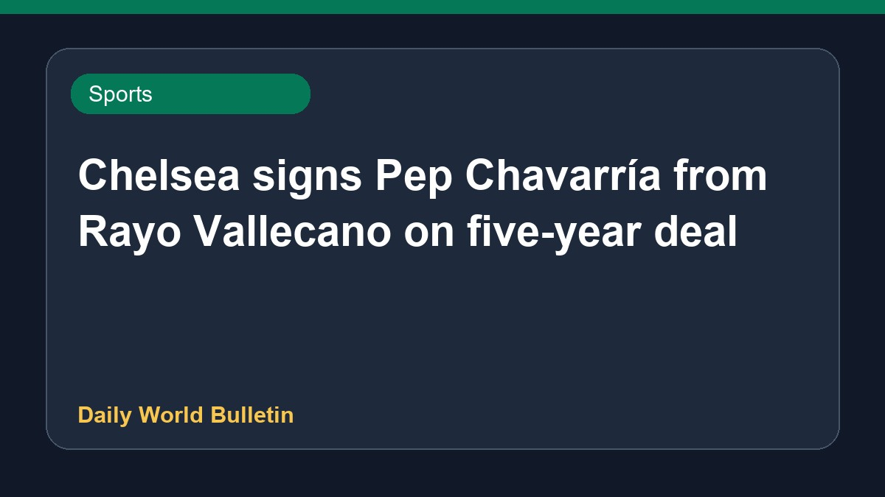

Chelsea signs Pep Chavarría from Rayo Vallecano on five-year deal

English Premier League club Chelsea has strengthened its defensive options by securing the transfer of left-back Pep Chavarría from Spanish club Rayo Vallecano. The player has signed a five-year contract with the London-based side, becoming their seventh signing of the summer transfer window. The acquisition adds depth to the team's full-back position following reports linking the player's arrival to strategic squad planning. Further details regarding the transfer fee and official club appearances are currently limited based on the available reports.
Original source: Sports News Sources
Xabi Alonso gets his man! Chelsea confirms SEVENTH summer signing as Pep Chavarria arrives from Rayo Vallecano - Goal.com ↗
Xabi Alonso gets his man! Chelsea confirms SEVENTH summer signing as Pep Chavarria arrives from Rayo Vallecano - Goal.com ↗